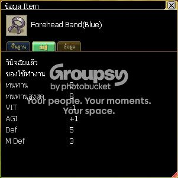
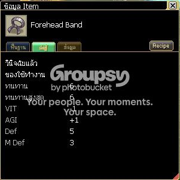
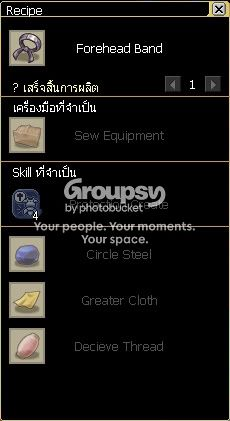
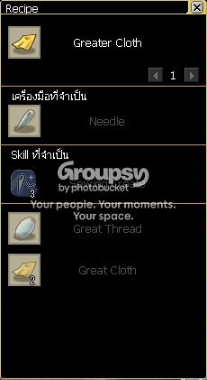
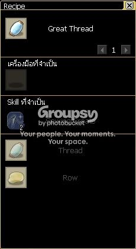
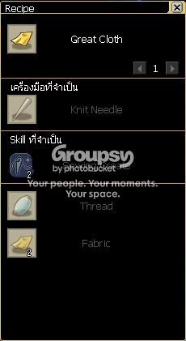
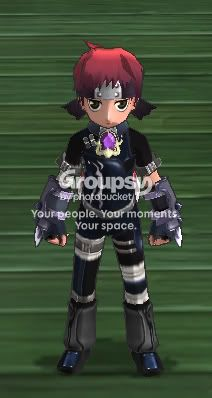

ขอบคุน นะ ครับ
ผมลืม คิด ไป ว่า มัน เป็นข้อม มูลผู้เล่น สู่ ผู้เล่น
อิอิ เข้า ใจผิด ปาย แต่ ตอนนี้ เซง มากมาย
ไม่รู้ ไปเก็บไหน ดี ขึ้น เหนือ ก็ มีแต่ตัวเว่อๆ เววิ่ว ใช้พิษงี้ ขนดำ ใช้เวท ที่ละ 200+ งี้
ลงใต้ ก็ แม่นกัน เ หลือ เกิน แต่ละตัว เซง ตอน นี้ 40 นะ คัฟ มี ที่ ไหน ขึ้น เร็วๆ
ของ ปั้ม ไม่ อั้น แนะนำ ที นะคัฟ เอา เปงSp นะ Hp ของปั้มน้อย หา ซื้อม่ายค่อยได้
งุงิ
Scout•Assassin•Commando - ย้ายบ้านๆ
 โดย ECO » อังคาร 21 ส.ค. 2007 4:09 pm
โดย ECO » อังคาร 21 ส.ค. 2007 4:09 pm
Mindfreak เขียน:ขอบคุน นะ ครับ
ผมลืม คิด ไป ว่า มัน เป็นข้อม มูลผู้เล่น สู่ ผู้เล่น
อิอิ เข้า ใจผิด ปาย แต่ ตอนนี้ เซง มากมาย
ไม่รู้ ไปเก็บไหน ดี ขึ้น เหนือ ก็ มีแต่ตัวเว่อๆ เววิ่ว ใช้พิษงี้ ขนดำ ใช้เวท ที่ละ 200+ งี้
ลงใต้ ก็ แม่นกัน เ หลือ เกิน แต่ละตัว เซง ตอน นี้ 40 นะ คัฟ มี ที่ ไหน ขึ้น เร็วๆ
ของ ปั้ม ไม่ อั้น แนะนำ ที นะคัฟ เอา เปงSp นะ Hp ของปั้มน้อย หา ซื้อม่ายค่อยได้
งุงิ
ลองไปเหมืองยังเอ่ย???
- ECO
- Dark Warrior
- โพสต์: 276285
- ลงทะเบียนเมื่อ: พุธ 26 ต.ค. 2011 9:31 pm
 โดย ECO » อังคาร 21 ส.ค. 2007 7:03 pm
โดย ECO » อังคาร 21 ส.ค. 2007 7:03 pm
เนียนตาดิ
เลเวล 1-6
Map: รอบเมืองหลวง
monster: Pururu,Archen,Amber Jelly,Crawler,Milk Pitcher
หมายเหตุ: ช่วงนี้เก็บเลเวลเร็วมาก ถ้ามีเวลาเหลือมาก ก็ตี Pururu กะ Archen จน 3 แล้ว Milk Pitcher ยัน 6 เลยก็ได้
เลเวล 6-10
Map: Snop Triangle
monster: Bau,Cool
หมายเหตุ: เอาเนื้อมากินเพิ่มเลือดหรือขายก็ได้ (เอาไว้เปลี่ยนดาบ) , กระดูกเก็บไปทำเควส , ระวังหมาน้ำแข็งด้วย
เลเวล 11-17
Map: East Acronia Coast
monster: Crawler,Green Pururu,Koketoris,Caterpillar,Mokuju,Dust Spider
หมายเหตุ: หลีกเหลี่ยงการตี Big Clawer , ช่วงร่างปกติตี Green Pururu , Dust Spider (14+) ส่วนที่เหลือ ถ้าไหวก็ตีได้ ถ้าไม่ไหวอย่าลอง (ทดลองก็ตี ถ้าเกือบตายก็วิ่งหนีไปแม็พอื่น ไม่ก็ hiding ให้ทัน) , ตอนแปลงร่างตีได้ทุกตัว , ระวังนกแดงเสกเวทตร์หิน , ระวังโดนรุม (สำคัญ)
เลเวล 18-21
Map: Sourin Cape , Steap Deasert
monster: Crimon Bau,Roper,Sand Clawer,Amber Jelly,Bau
หมายเหตุ: ระวังโดนรุมนะ งิ , ระวังบอส Roper (Tentacle , king Robber) และ Buri King RX1 สำหรับคนที่เก็บที่ Sourin Cape
เลเวล 21-25
Map: Momo Plain
monster: Cococo,Immature Cococo,Jersey Worm
หมายเหตุ: ระวัง Wild Bo ด้วยอย่าไปสู้มันไม่คุ้ม
เลเวล 30-35
Map: North Endless
monster: Angel Feather,Vilido,Pepen,Pulun,Cyclop
หมายเหตุ: ตี Pepen กับ Pulun และ Cyclop หาไข่มังกือได้ , ระวัง Magician เพราะมันเสกพิษ , พยายามเก็บอยู่แถวบ้านแอสคีโม เพราะถ้าติดพิษหรือเกือบตายก็วิ่งเข้าบ้าน
เลเวล 35-40
Map: Volcano
monster: Cinnamon,Larva Pururu
หมายเหตุ: ม่ายรู้อ่า (เวลไม่ถึง = =)
เลเวล 40-50
Map: Bed Rock of Soul , Ancient Coal Mine
monster: Tropical Fish,Southern Pepen,Geego,Fulu Fulu,Killer Beast,Black Bear,Kuburu
หมายเหตุ: ม่ายรู้อ่า เช่นเคย = =
เลเวล 50-60
Map: South Dungeon
monster: Buri King RX3,Debustider,Spell Caster,Blocks,Ramia,Kimera
หมายเหตุ: thx.กระทู้นักดาบ เพราะมะรู้ รู้ว่าเก็บที่นี้ หมายเหตุเดียวกะนักดาบมะได้
เลเวล 60-70
Map: Bastion of Fushigi Guild
monster: Forton,Handid,Franker Pirate
หมายเหตุ: น่าจะมีvatesไปด้วยจะทำให้เก็บเลเวลสะดวกยิ่งขึ้น ช่วงนี้เป็นช่วงที่เก็บเลเวลได้ไวกว่าช่วง40-50 และ 50-60มากเลย เพราะมอนเตอร์แต่ละตัวให้expสูง (thx. กระทู้นักดาบ)
เลเวล 70-90
Map: my island , Tower of light
monster: Shine B,Escargot,[koganegumo],[toropikarugigo],[baruru],[barurukitsuzu],Umbrella,Platinum,Twinkling,Hell diver
หมายเหตุ: ทั้ง 2 แมพยังไม่เปิดในsagaนี้
เลเวล 1-6
Map: รอบเมืองหลวง
monster: Pururu,Archen,Amber Jelly,Crawler,Milk Pitcher
หมายเหตุ: ช่วงนี้เก็บเลเวลเร็วมาก ถ้ามีเวลาเหลือมาก ก็ตี Pururu กะ Archen จน 3 แล้ว Milk Pitcher ยัน 6 เลยก็ได้
เลเวล 6-10
Map: Snop Triangle
monster: Bau,Cool
หมายเหตุ: เอาเนื้อมากินเพิ่มเลือดหรือขายก็ได้ (เอาไว้เปลี่ยนดาบ) , กระดูกเก็บไปทำเควส , ระวังหมาน้ำแข็งด้วย
เลเวล 11-17
Map: East Acronia Coast
monster: Crawler,Green Pururu,Koketoris,Caterpillar,Mokuju,Dust Spider
หมายเหตุ: หลีกเหลี่ยงการตี Big Clawer , ช่วงร่างปกติตี Green Pururu , Dust Spider (14+) ส่วนที่เหลือ ถ้าไหวก็ตีได้ ถ้าไม่ไหวอย่าลอง (ทดลองก็ตี ถ้าเกือบตายก็วิ่งหนีไปแม็พอื่น ไม่ก็ hiding ให้ทัน) , ตอนแปลงร่างตีได้ทุกตัว , ระวังนกแดงเสกเวทตร์หิน , ระวังโดนรุม (สำคัญ)
เลเวล 18-21
Map: Sourin Cape , Steap Deasert
monster: Crimon Bau,Roper,Sand Clawer,Amber Jelly,Bau
หมายเหตุ: ระวังโดนรุมนะ งิ , ระวังบอส Roper (Tentacle , king Robber) และ Buri King RX1 สำหรับคนที่เก็บที่ Sourin Cape
เลเวล 21-25
Map: Momo Plain
monster: Cococo,Immature Cococo,Jersey Worm
หมายเหตุ: ระวัง Wild Bo ด้วยอย่าไปสู้มันไม่คุ้ม
งานพิเศษหาเงินสำหรับ 20+
Map: Snop Snowfield , Warship Island
monster: Bear,Cave Bear,Polar Bear,White Fang (ตีเฉพาะที่บอกเท่านั้น)
หมายเหตุ: ช่วงหาเงินจากFER ไว้ซื้อชุด , เนื้อเอาไปทำเป็เนื้อรมควัญ
เลเวล 30-35
Map: North Endless
monster: Angel Feather,Vilido,Pepen,Pulun,Cyclop
หมายเหตุ: ตี Pepen กับ Pulun และ Cyclop หาไข่มังกือได้ , ระวัง Magician เพราะมันเสกพิษ , พยายามเก็บอยู่แถวบ้านแอสคีโม เพราะถ้าติดพิษหรือเกือบตายก็วิ่งเข้าบ้าน
เลเวล 35-40
Map: Volcano
monster: Cinnamon,Larva Pururu
หมายเหตุ: ม่ายรู้อ่า (เวลไม่ถึง = =)
เลเวล 40-50
Map: Bed Rock of Soul , Ancient Coal Mine
monster: Tropical Fish,Southern Pepen,Geego,Fulu Fulu,Killer Beast,Black Bear,Kuburu
หมายเหตุ: ม่ายรู้อ่า เช่นเคย = =
เลเวล 50-60
Map: South Dungeon
monster: Buri King RX3,Debustider,Spell Caster,Blocks,Ramia,Kimera
หมายเหตุ: thx.กระทู้นักดาบ เพราะมะรู้ รู้ว่าเก็บที่นี้ หมายเหตุเดียวกะนักดาบมะได้
เลเวล 60-70
Map: Bastion of Fushigi Guild
monster: Forton,Handid,Franker Pirate
หมายเหตุ: น่าจะมีvatesไปด้วยจะทำให้เก็บเลเวลสะดวกยิ่งขึ้น ช่วงนี้เป็นช่วงที่เก็บเลเวลได้ไวกว่าช่วง40-50 และ 50-60มากเลย เพราะมอนเตอร์แต่ละตัวให้expสูง (thx. กระทู้นักดาบ)
เลเวล 70-90
Map: my island , Tower of light
monster: Shine B,Escargot,[koganegumo],[toropikarugigo],[baruru],[barurukitsuzu],Umbrella,Platinum,Twinkling,Hell diver
หมายเหตุ: ทั้ง 2 แมพยังไม่เปิดในsagaนี้
- ECO
- Dark Warrior
- โพสต์: 276285
- ลงทะเบียนเมื่อ: พุธ 26 ต.ค. 2011 9:31 pm
 โดย ECO » อังคาร 21 ส.ค. 2007 7:26 pm
โดย ECO » อังคาร 21 ส.ค. 2007 7:26 pm
Cinnamon เลือดน้อย ตัวบางคับ ยอมอัพสกิลเช่น Banish Blow หรือ Brandish จะทำให้เก็บเลเวลได้คล่องตัวมาก แล้วค่อยไปรีออกที่หลังได้
สำหรับสกิลจักจั่นลอกคราบ มอนจะชะงักครับ ประมาณ 3 วิ ถ้าเราไม่ไปทำอะไรมัน แต่ถ้าไปตีมัน มันก็จะ active เหมือนเดิมครับ
อันใหนพอตอบได้ ผมจาตอบให้นะครับ ^ ^
สำหรับสกิลจักจั่นลอกคราบ มอนจะชะงักครับ ประมาณ 3 วิ ถ้าเราไม่ไปทำอะไรมัน แต่ถ้าไปตีมัน มันก็จะ active เหมือนเดิมครับ
อันใหนพอตอบได้ ผมจาตอบให้นะครับ ^ ^
- ECO
- Dark Warrior
- โพสต์: 276285
- ลงทะเบียนเมื่อ: พุธ 26 ต.ค. 2011 9:31 pm
 โดย ECO » อังคาร 21 ส.ค. 2007 11:35 pm
โดย ECO » อังคาร 21 ส.ค. 2007 11:35 pm
เกมนี้ ตี+ ยากป่าว คัฟ
แล้ว ถ้ายาก มัน ยาก ประมาน ไหน หรอ ตอน+5 +6 +7 +8 ไรงี้
ถ้าได้ ราคา จะ ประมาน เท่าไหร่ หรอ วิจาร ที นะ คัฟ แล้ว ท่าน คิด เลย นะ คัฟ
ไม่เอา ชัวๆ เอา ตาม ที่ ท่าน คิด ราคา เท่าไหร่ ดี Thx น๊าจ๊ะ
แล้ว ถ้ายาก มัน ยาก ประมาน ไหน หรอ ตอน+5 +6 +7 +8 ไรงี้
ถ้าได้ ราคา จะ ประมาน เท่าไหร่ หรอ วิจาร ที นะ คัฟ แล้ว ท่าน คิด เลย นะ คัฟ
ไม่เอา ชัวๆ เอา ตาม ที่ ท่าน คิด ราคา เท่าไหร่ ดี Thx น๊าจ๊ะ
- ECO
- Dark Warrior
- โพสต์: 276285
- ลงทะเบียนเมื่อ: พุธ 26 ต.ค. 2011 9:31 pm
 โดย ECO » พุธ 22 ส.ค. 2007 1:46 am
โดย ECO » พุธ 22 ส.ค. 2007 1:46 am
Mindfreak เขียน:เกมนี้ ตี+ ยากป่าว คัฟ
แล้ว ถ้ายาก มัน ยาก ประมาน ไหน หรอ ตอน+5 +6 +7 +8 ไรงี้
ถ้าได้ ราคา จะ ประมาน เท่าไหร่ หรอ วิจาร ที นะ คัฟ แล้ว ท่าน คิด เลย นะ คัฟ
ไม่เอา ชัวๆ เอา ตาม ที่ ท่าน คิด ราคา เท่าไหร่ ดี Thx น๊าจ๊ะ
+3 100% ครับ มากกว่านี้ มีโอกาสแตก
- ECO
- Dark Warrior
- โพสต์: 276285
- ลงทะเบียนเมื่อ: พุธ 26 ต.ค. 2011 9:31 pm
 โดย ECO » พุธ 22 ส.ค. 2007 2:41 am
โดย ECO » พุธ 22 ส.ค. 2007 2:41 am
เลเวล 65 ส่วนใหญ่ job จะเพิ่ง 30 กันเองครับ
แต่ผมอัพชัวคับแยกร่าง แต่คงอีกซักรึ่งปี.. ประมาณนั้น
วันนี้ด้วยความพยายาม + ไม่มีเรียนพรุ่งนี้ ทำให้ผมประสบความสำเร็จในการพังมีดละคับ โดยการเอามีดไปฟาดใส่เจ้าหนอนม่วงยักด้วย SSDC ตั้งแต่4 ทุ่ม ยันตีสองครึ่ง
โดยที่ความทนทาน 1 สุดท้าย ยาวนานมากๆๆๆๆๆๆๆๆ (ดวงไม่ดีหรือเปล่าไม่ทราบ แต่ฟาดหนอนตายไปสองตัว ในช่วงเวลาคนไม่เยอะ 1 ชั่วโมงเต็ม คิดว่านานใหม - -")
ในที่สุดก็ทำได้คับ
ลองเทียบเวลาดูเอานะคับ ว่ากว่าจะพังมันนานขนาดใหน - -"

ตี 1 27 นาที 32 วินที

ตี 2 26 นาที 22 วินาที
แต่ผมอัพชัวคับแยกร่าง แต่คงอีกซักรึ่งปี.. ประมาณนั้น
วันนี้ด้วยความพยายาม + ไม่มีเรียนพรุ่งนี้ ทำให้ผมประสบความสำเร็จในการพังมีดละคับ โดยการเอามีดไปฟาดใส่เจ้าหนอนม่วงยักด้วย SSDC ตั้งแต่4 ทุ่ม ยันตีสองครึ่ง
โดยที่ความทนทาน 1 สุดท้าย ยาวนานมากๆๆๆๆๆๆๆๆ (ดวงไม่ดีหรือเปล่าไม่ทราบ แต่ฟาดหนอนตายไปสองตัว ในช่วงเวลาคนไม่เยอะ 1 ชั่วโมงเต็ม คิดว่านานใหม - -")
ในที่สุดก็ทำได้คับ
ลองเทียบเวลาดูเอานะคับ ว่ากว่าจะพังมันนานขนาดใหน - -"
ตี 1 27 นาที 32 วินที
ตี 2 26 นาที 22 วินาที
- ECO
- Dark Warrior
- โพสต์: 276285
- ลงทะเบียนเมื่อ: พุธ 26 ต.ค. 2011 9:31 pm
 โดย ECO » พุธ 22 ส.ค. 2007 1:45 pm
โดย ECO » พุธ 22 ส.ค. 2007 1:45 pm
Mo_O[A]nn เขียน:Lv. 31 ละอา หาเสื้อผ้าไรใส่ดีอ่ะ หรือมีเสื้อผ้าไรสวยๆพอจาใส่ได้มั่งอ่ะ
ละก้อาวุธด้วย ช่วยแนะนำหน่อยนะค่ะ
ไม่ได้เปลี่ยนเสื้อผ้ามานานโข
เสื้อ 30 ไปซื้อที่เกาะเรือรบได้ครับ โล่ ที่เมืองเหนือจ้า นอกนั้น แนะนำรอ 35 ครับ
- ECO
- Dark Warrior
- โพสต์: 276285
- ลงทะเบียนเมื่อ: พุธ 26 ต.ค. 2011 9:31 pm
 โดย ECO » พุธ 22 ส.ค. 2007 3:03 pm
โดย ECO » พุธ 22 ส.ค. 2007 3:03 pm
Lv.15
หมวก+เสื้อ หาซื้อได้ที่ Map : Sourin Cape

ซื้อที่เบอร์3น่ะ
ส่วนบู๊ทไม่ต้องใส่ ใส่เกงเลเวล15 หาซื้อจากไหนจำไม่ได้ กะรองเท้าตอนเวล8หรือ10เอา
Lv.20
หมวกซื้อได้ที่ Map : Norzarin Cape จากลุงมาริโอชุดเขียวเบอร์ 3

เสื้อกับกางเกงทำQที่เบอร์ 7 กับ 8 สีแดง Down Town ใส่ได้เฉพาะผู้ชาย

นำ 2 Royal Jelly หรือ 1 Kabior ไปให้แล้วจะเปิดขาย (บางทีกางเกงก็ไม่โผล่ให้ขาย ต้องทำซ้ำ) รองเท้าก็ใส่กับของเก่าไปก่อน
Lv.27
เสื้อซื้อได้ที่ Map : Norzarin Cape ที่เดียวกับหมวกเวล 20
(เพราะสกิลกันหนาวจึงไม่ต้องซื้อ hot stone มาใช้ ส่วนใหญ่ตอน27ก็พอสดเมืองเหนือไหว)
Lv.30
เสื้อกับหมวกซื้อได้ที่ Map : Warship Island

หมายเลข 1 ลุงมาริโอชุดเขียวอีกเช่นเคย
(เกาะเรือรบที่เข้าใจกัน แต่ไม่นิยมใส่หมวก เนื่องจากทำให้ใส่หน้ากากสเกาไม่ได้)
รองเท้าซื้อได้ที่ Dungeon Frozen Cave ชั้น 3 โดยเข้าได้ทาง Map : Snop Snow Field

หมายเลข 1 น่ะ
Lv.35
ทั้งชุดยกเว้นหมวกทำQเปิดร้านขายกับSafaneเอาใน Up Town

หมายเลข 2 สีส้มเน้อ
*หมายเหตุ เฉพาะตัว ช* ถ้าใส่ชุดเฉพาะอาชีพจะกินช่องเสื้อ กางเกง รองเท้า ถุงเท้า
หรือจะซื้อเฉพาะเสื้อโดยทำQกับ Arus The Iron Smith หมายเลข 4 สีส้มเช่นกัน
หมวกซื้อได้ที่เมืองเหนือ

เบอร์ 4 สีน้ำเงิน
หรือ
หาจาก
ที่มาhttp://board.onenet.co.th/viewtopic.php?t=18805
แต่แปลกน่ะ ผมทำQมีดพัง ก็ได้สีเดียวกับเพื่อนนารุคุง หรือมันมีอยู่สีเดียว
ดูจิ แบบเพื่อนนารุคุงจะมีสีแบบเนี้ยะ เหมือนสีผมเผ่าDominionเลย มีใครได้สีอื่นบ้าง ( 'w' )/~~

หมวกQมีพังLv.45แบบสี[Blue]
Q : ไปรับQอาวุธพังที่ไหน ?
ที่มาhttp://board.onenet.co.th/viewtopic.php?t=19562
Lv.40-45
หมวกกับเสื้อซื้อที่เมืองเหนือ เบอร์ 4 สีส้มของผู้ชาย(ผู้หญิงเข้าไม่ได้) เบอร์ 3 สีส้มของผู้หญิง(ผู้ชายเข้าไม่ได้)
Lv.45
ใส่ได้เฉพาะ AssasinกับCommando ดังนั้นใครเล่นสเกาจอบ50 อย่าพึ่งไปทำ
http://board.onenet.co.th/viewtopic.php?t=05032
*หมายเหตุ เฉพาะตัว ช* ถ้าใส่ชุดLv.45จะไม่สามารถใส่ร่วมกับ Secret Mask ได้ แต่ชุดLv.55 ดันใส่ได้ ดังนั้นอย่าเพิ่งไปรีบขาย Secret Mask ตอนใส่ชุด Lv.45 อยู่
Lv.55
ทำQส่งก่อนละลายของGondou จะเปิดให้ขาย สเกาใส่ได้น่ะ

ซื้อที่หมายเลข4น่ะ
Lv.60
Lv.65
Set ญ
Set ช
Other items about scout
Q : แล้วผมจะหาได้จากไหนอ่า... ?
A :
ถ้าไม่ได้ไปโดดถีบมานนน ----> Ruk[z']_Val[v]e
Weapon : Claws
Claws แต่ Lv. หาได้จาก :
รูปตอนใส่ Claws แต่ Lv. :
ที่มาhttp://board.onenet.co.th/viewtopic.php?t=20023
Process : 0llllllllllllllllllllllllllllllllllllllll100%
รบกวนใครมีชุดที่ยังไม่ได้นำไป+ และเป็นส่วนที่ขาด ถ้ายังมีอยู่ ได้โปรดกรุณาโพสต์ทีน่ะครับ ขอบคุณน่ะครับ
Special Thx :
drogonsblack สำหรับข้อมูลทำชุดLv.65 ภาพชุด หมวกLv.65 เครื่องประดับLv.45 ข้อมูลสนับ และหมวกTiny
M249 สำหรับภาพรองเท้ากับหมวกแอสหญิง LV.65 ต้องขออภัย สำหรับภาพอื่นๆ เนื่องจากเกรงว่าคนอื่นจะสับสนจากข้อมูล เพราะมันได้ตี+ไปเรียบร้อยแล้ว
นารุคุง สำหรับข้อมูลผ้าคาดหัว Lv.35
[GM]เป๊ปเป้ สำหรับข้อมูลQอาวุธพัง Lv.45
Ruk[z']_Val[v]e สำหรับข้อมูลของแปลกๆที่เกี่ยวข้องกับscout
ArKinA สำหรับรูปภาพตอนใส่กรงเล็บและข้อมูลบางส่วน(แต่เป็นญี่ปุ่น)
IceExsHoT สำหรับรายละเอียดเพิ่มเติม(แต่เป็นญี่ปุ่นอีกแหละ) และโปรแกรมแปลภาษา(กลายเป็น Eng ต่อ -*-)
kyledunamis สำหรับคำแปลวิธีการสร้างกรบเล็บ
Celsius สำหรับการแก้ Item ทำกรงเล็บบางส่วน
Nitro_Z สำหรับสร้างบอร์ดมา และยังอุตส่าห์มาอัพเดต บ่อยๆ(มั้ง)
Credit รูป Map http://board.onenet.co.th/viewtopic.php?t=9340
หมวก+เสื้อ หาซื้อได้ที่ Map : Sourin Cape
ซื้อที่เบอร์3น่ะ
ส่วนบู๊ทไม่ต้องใส่ ใส่เกงเลเวล15 หาซื้อจากไหนจำไม่ได้ กะรองเท้าตอนเวล8หรือ10เอา
Lv.20
หมวกซื้อได้ที่ Map : Norzarin Cape จากลุงมาริโอชุดเขียวเบอร์ 3


เสื้อกับกางเกงทำQที่เบอร์ 7 กับ 8 สีแดง Down Town ใส่ได้เฉพาะผู้ชาย
นำ 2 Royal Jelly หรือ 1 Kabior ไปให้แล้วจะเปิดขาย (บางทีกางเกงก็ไม่โผล่ให้ขาย ต้องทำซ้ำ) รองเท้าก็ใส่กับของเก่าไปก่อน
Lv.27
เสื้อซื้อได้ที่ Map : Norzarin Cape ที่เดียวกับหมวกเวล 20
(เพราะสกิลกันหนาวจึงไม่ต้องซื้อ hot stone มาใช้ ส่วนใหญ่ตอน27ก็พอสดเมืองเหนือไหว)
Lv.30
เสื้อกับหมวกซื้อได้ที่ Map : Warship Island

หมายเลข 1 ลุงมาริโอชุดเขียวอีกเช่นเคย
(เกาะเรือรบที่เข้าใจกัน แต่ไม่นิยมใส่หมวก เนื่องจากทำให้ใส่หน้ากากสเกาไม่ได้)
รองเท้าซื้อได้ที่ Dungeon Frozen Cave ชั้น 3 โดยเข้าได้ทาง Map : Snop Snow Field
หมายเลข 1 น่ะ
Lv.35
ทั้งชุดยกเว้นหมวกทำQเปิดร้านขายกับSafaneเอาใน Up Town


หมายเลข 2 สีส้มเน้อ
*หมายเหตุ เฉพาะตัว ช* ถ้าใส่ชุดเฉพาะอาชีพจะกินช่องเสื้อ กางเกง รองเท้า ถุงเท้า
หรือจะซื้อเฉพาะเสื้อโดยทำQกับ Arus The Iron Smith หมายเลข 4 สีส้มเช่นกัน
หมวกซื้อได้ที่เมืองเหนือ
เบอร์ 4 สีน้ำเงิน
หรือ
หาจาก
นารุคุง เขียน:ผ้าคาดผมสำคัญของสาย AGI ที่ไม่ควรพลาด
วิธีได้มา
1.มาจาก เควส45ตีมีดให้พัง ซึ่งทำให้ใครต่อใครคงเอียนจนเลิกไปแล้ว[ผมด้วยเลิกแล้ว] ซึ่งจะทำการสุ่มสีออกมา[เพื่อนผมเป็นคนบอก]
2.ได้มาจากการทำเครื่องป้องกัน
3.ได้มาจากเควสแหวน[วงที่ 2 หรือชั้นที่10 15] นำไปแลกกับคุณลุงที่ uptown[อาจจะได้] โดยวิธีนี้ไม่รู้ว่าจะได้สีอะไร พอดีไม่เคยลอง
ดังนั้นมาดูระหว่างวิธีที่ 1 กับ 2

Recipe
*** Circle Steel หาได้จากหินทาทาราเบ้ ที่ดันใต้ / Decieve Thread หาได้จาก Ramia ที่ดันใต้ชั้น 2


จากผ้าคาดทั้ง 2จะเห็นว่า ถ้าทำเควส 45 มีดพังสำเร็จผ้าคาดจะทนทานมากกว่าแบบทำเอง แม้จะต่างกันไม่มาก
แต่มีโอกาสได้ลุ้นสีสวยๆเท่ห์ แบบไม่เหมือนใครแต่ด้วยระยะเวลาที่นานมาก[อ้างอิงจากเพื่อนผม ทำตอน 45 แตกหมดราวๆ 60.. O[]o]
ส่วนของทำผ้าคาดก็เริ่มมีออกมาวางขายแล้วแต่ด้วยราคาที่แพงอาจต้องคิดกันให้มากหน่อย
ถือว่ามาเป็นทางเลือกดีๆ หรือมาเป็นกำลังใจให้ชาว Scout และ Assassin ที่อยากได้ผ้าคาดมาใช้
รูปตอนใส่จะเป็นแบบนี้
*** ของผมทำเอา จะได้เป็นสีแบบออกม่วงดำๆ ตามชุดของAssassin...
*** ขอบคุณ พาราไดส์ ที่ให้ดูข้อมูลผ้าคาดนะครับ
ที่มาhttp://board.onenet.co.th/viewtopic.php?t=18805
แต่แปลกน่ะ ผมทำQมีดพัง ก็ได้สีเดียวกับเพื่อนนารุคุง หรือมันมีอยู่สีเดียว
ดูจิ แบบเพื่อนนารุคุงจะมีสีแบบเนี้ยะ เหมือนสีผมเผ่าDominionเลย มีใครได้สีอื่นบ้าง ( 'w' )/~~
หมวกQมีพังLv.45แบบสี[Blue]
Q : ไปรับQอาวุธพังที่ไหน ?
[GM]เป๊ปเป้ เขียน: :oops: เควสอาวุธ 45 สามารถเริ่มเควส Event นี้ได้ ตอนที่ตัวละครมี Level 45 ค่ะ
และไม่มีข้อกำหนดเรื่องค่าชื่อเสียงค่ะ
:arrow: อาวุธ Lv.45 ไปคุยกับ NPC:Ancient Story Talker
ในห้อง Assembly Lobby ที่เมืองกลางเมือง Iron City Upstairs
:arrow: คุยไปเรื่อยๆ เค้าจะให้ อาวุธ Lv.45 มาค่ะ :oops:
:oops: เนื้อเรื่องของเควสนี้
เกี่ยวกับความอดทนของนักรบต่างๆ (สาย Fighter , สาย Spell User)
จึงทำให้สาย Back Packer ไม่มีส่วนร่วมในเควสนี้ค่ะ
:oops: ^^ :oops:
:arrow: เมื่อคุณนำอาวุธไปใช้ จนค่าความทนทานเหลือ 0
ให้กลับมาพบกับ NPC:Ancient Story Talker อีกครั้งค่ะ
แล้วเค้าจะให้รองเท้า Lv.55 ตามสายอาชีพมาค่ะ :oops:


ที่มาhttp://board.onenet.co.th/viewtopic.php?t=19562
Lv.40-45
หมวกกับเสื้อซื้อที่เมืองเหนือ เบอร์ 4 สีส้มของผู้ชาย(ผู้หญิงเข้าไม่ได้) เบอร์ 3 สีส้มของผู้หญิง(ผู้ชายเข้าไม่ได้)
Lv.45
ใส่ได้เฉพาะ AssasinกับCommando ดังนั้นใครเล่นสเกาจอบ50 อย่าพึ่งไปทำ
http://board.onenet.co.th/viewtopic.php?t=05032


*หมายเหตุ เฉพาะตัว ช* ถ้าใส่ชุดLv.45จะไม่สามารถใส่ร่วมกับ Secret Mask ได้ แต่ชุดLv.55 ดันใส่ได้ ดังนั้นอย่าเพิ่งไปรีบขาย Secret Mask ตอนใส่ชุด Lv.45 อยู่
Lv.55
ทำQส่งก่อนละลายของGondou จะเปิดให้ขาย สเกาใส่ได้น่ะ
ซื้อที่หมายเลข4น่ะ
Lv.60
drogonsblack เขียน:ส่วนหมวก ขอแน่ะนำอันนี้ละกาน +เหมือนกะ ของผู้หญิงอ่ะ แถม+ความหล่อ วิธีทำไม่ยาก ลิงค์ข้างล่างเยย http://board.onenet.co.th/viewtopic.php?t=17003

Lv.65
drogonsblack เขียน:ขอเสริม ชุด วิธีทำอย่างระเอียดเควส 65
เริ่มเควสเลเวล60 ( ใช้ 3 พอย ในการรับเควส ) รับเควสกับยาม*
1.ไปหาราชินีด้านบนสุดของเมืองเหนือ
หมายเลข 1
เมื่อคุยแล้วจะได้
key of queen
(ได้ฟรีครั้งเดียวเท่านั้นนะ)
2.กลับมาที่ห้องก่อนถึงห้องราชินี คุยกับยามขวาล่าง
ให้เลือกเข้าห้องสมบัติ จะเจอกล่อง4กล่อง ตอนนี้กดเปิดกล่องไหนก้อได้ จะได้ยาชุบมาค่ะ
3.กลับออกมาคุยกะยามอีกที คราวนี้ให้รับเควสมาค่ะ(รับเควสเป็นปาตี้ได้)
4.เควสจาให้เรากำจัดมินิดูยักษ์ เป็นตัวมินิดูนี่แหละ แต่จะไม่โจมตีก่อน และเมื่อโจมตีมันแล้วตัวจะใหญ่ขึ้นเรื่อยๆ เจ้าตัวนี้อยู่ส่วนซ้ายล่างของดันเหนือค่ะ
มินิดูยัก มีเลือด 2แสน ไม่โจมตีก่อน แต่เมื่อเราตีไปเรื่อยๆ เจ้าตัวนี้จะ โต ขึ้นเรื่อยๆ จนใกล้ตายเจ้าตัวนี้ จะระเบิดตัวเอง 1500-2000 (ถึงแม้เราจะตาย แต่คนในตี้ไม่ตาย เควสก็ผ่านค่ะ)
5.เมื่อทำเควสสำเร็จก้อกลับไปที่ยามก้อจะได้key of queenมาอีก
เสร็จแล้วเข้าห้องสมบัติอีกที คราวนี้เราก้อจะได้ชุด65จากกล่องซะที
หมายเลข 1 จะเป็น เท้า 65
หมายเลข 2 จะเป็น เสื้อ 65
หมายเลข 3 จะเป็น เกง 65
หมายเลข 4 จะเป็น หมวก 65
ชุดที่ได้จะเป็นชุดประจำอาชีพเราเท่านั้นนะ แล้วก้อกุญแจ1ดอกต่อ1กล่องนะคะ ทำเควสหลายๆครั้งก้อจะได้ครบ แน่ะนำให้หันหน้าดังรูปนะคับ มิเช่นนั้นจะ คาดเคลื่อนได้
ปล.เครดิต ploy http://board.onenet.co.th/viewtopic.php?t=18762&postdays=0&postorder=asc&start=15


Set ญ


Set ช


Other items about scout
Ruk[z']_Val[v]e เขียน:เอารูปโล้ สเกาท์มาฝากคับ
ใส่เเล้วเป้นแบบนี้ฮับ


Ruk[z']_Val[v]e เขียน:รองเท้า 45 คับ รองเท้า 45
ไส่เเล้วเปงแบบนิ


Q : แล้วผมจะหาได้จากไหนอ่า... ?
A :
Ruk[z']_Val[v]e เขียน:รองเท้า 45 น่าจะ กล่องไม้ เบอร์ 6 นะ คับ ไม่เเน่ใจเพราะซื้อมา หิหิ
ส่วน โล้ นี้ ดรอปจาก ทีชัว7 ที่ดันไต้ ชั้น 3 คับ ไม่เเน่ใจว่าเปิดจะได้ รึป่าว (จะโดนถีบมั้ยหว่า)
ถ้าไม่ได้ไปโดดถีบมานนน ----> Ruk[z']_Val[v]e
Weapon : Claws

Claws แต่ Lv. หาได้จาก :
Celsius เขียน:kyledunamis เขียน:ข้อมูลจากเวปนั่นแหละ (แปลเอา พอดีเล่นวอร๊อค ไม่ได้เล่นสเกาท์ แต่มาหาข้อมูลให้เพื่อนในริง)Scout Claw Lv 30 ซื้อได้จาก Sterp Desert ตรงคาราวานพ่อค้า
Iron Knuckle Lv 50 ซื้อจาก Morg
Battle Knuckle Lv 60 สร้างโดยใช้สกิลสร้างอาวุธระดับ 7 และใช้ Knuckle Guard + Iron Knuckle
Fang Claw Lv 70 สร้างโดยใช้สกิลสร้างอาวุธระดับ 8 และใช้ Sharp Fang 2 ชิ้น + Pelf Belt 2 + Raikyou Skin 2 ชิ้น + Solvent(คิดว่าใช่)
Ruby Eyes Lv 80 สร้างโดยใช้สกิลสร้างอาวุธระดับ 9 ใช้ Sharp Fang 2 ชิ้น + Heart Ruby 2 ชิ้น + Pelf Belt 4 ชิ้น + Demon Steel 2 ชิ้น
ประมาณนี้แหละมั้ง
แก้ให้อีกที
รูปตอนใส่ Claws แต่ Lv. :
ArKinA เขียน:แหะๆ พอดีวันนี้ค้นเวปมั่วๆไปเจอพอดีนะ คะ ^^
เลยเอามาให้ดู กันเล่นๆก่อน
อันนี้รูปกงเล็บ เวล30 เวลาใส่จ้า(เห็นจนเบื่อละชิมิ)
อันนี้กงเล็บ 50 จ้า มาพร้อมแพทเมือง Mong มีขายที่เมือง Mongด้วย ราคา62000
อันนี้เวล 60จ้า หาซื้อที่ไหนไม่ได้ต้องผสมเอาอย่างเดียว^^
อันนี้ กงเล็บ70 คิดว่าดูสวยสุดละนะ^^ ต้องผสมอีกเหมือนกัน
และสุดท้ายกงเล้บ80 จ้า สีขาวแปลกตาดี >,,<
เวปที่ไปหามามีข้อมูลบอกหมดเลยนะคะ แต่พอดีหนูแปลไม่ออก เลยได้แต่เอารูปกะข้อมูลคร่าวๆ มาให้ดู ใครที่เก่ง ภาษา ญี่ปุ่น ก็ ช่วยแปลให้เพื่อนๆด้วยนะคะ
ข้อมูลในลิ้งค์นี้เลยจ้า ^^ ช่วยๆกันนะ http://www.mmo-station.com/semo/et/html ... pon7.shtml
Credit จ้า www.mmo-station.coml


ที่มาhttp://board.onenet.co.th/viewtopic.php?t=20023
Process : 0llllllllllllllllllllllllllllllllllllllll100%
รบกวนใครมีชุดที่ยังไม่ได้นำไป+ และเป็นส่วนที่ขาด ถ้ายังมีอยู่ ได้โปรดกรุณาโพสต์ทีน่ะครับ ขอบคุณน่ะครับ
Special Thx :
drogonsblack สำหรับข้อมูลทำชุดLv.65 ภาพชุด หมวกLv.65 เครื่องประดับLv.45 ข้อมูลสนับ และหมวกTiny
M249 สำหรับภาพรองเท้ากับหมวกแอสหญิง LV.65 ต้องขออภัย สำหรับภาพอื่นๆ เนื่องจากเกรงว่าคนอื่นจะสับสนจากข้อมูล เพราะมันได้ตี+ไปเรียบร้อยแล้ว
นารุคุง สำหรับข้อมูลผ้าคาดหัว Lv.35
[GM]เป๊ปเป้ สำหรับข้อมูลQอาวุธพัง Lv.45
Ruk[z']_Val[v]e สำหรับข้อมูลของแปลกๆที่เกี่ยวข้องกับscout
ArKinA สำหรับรูปภาพตอนใส่กรงเล็บและข้อมูลบางส่วน(แต่เป็นญี่ปุ่น)
IceExsHoT สำหรับรายละเอียดเพิ่มเติม(แต่เป็นญี่ปุ่นอีกแหละ) และโปรแกรมแปลภาษา(กลายเป็น Eng ต่อ -*-)
kyledunamis สำหรับคำแปลวิธีการสร้างกรบเล็บ
Celsius สำหรับการแก้ Item ทำกรงเล็บบางส่วน
Nitro_Z สำหรับสร้างบอร์ดมา และยังอุตส่าห์มาอัพเดต บ่อยๆ(มั้ง)
Credit รูป Map http://board.onenet.co.th/viewtopic.php?t=9340
- ECO
- Dark Warrior
- โพสต์: 276285
- ลงทะเบียนเมื่อ: พุธ 26 ต.ค. 2011 9:31 pm
 โดย ECO » พุธ 22 ส.ค. 2007 3:07 pm
โดย ECO » พุธ 22 ส.ค. 2007 3:07 pm
Arizen เขียน:เวล15
หมวก+เสื้อ หาซื้อได้ที่ Map : Sourin Cape
ส่วนบู๊ทไม่ต้องใส่ ใส่เกงเลเวล15 หาซื้อจากไหนจำไม่ได้ กะรองเท้าตอนเวล8หรือ10เอา
เวล20
หมวกซื้อได้ที่ Map : Norzarin Cape
เสื้อกับกางเกงทำQที่ Down Town รู้สึกจะเอา 2 Royal Jelly หรือ 1 Cavierไปให้แล้วจะเปิดขาย (บางทีกางเกงก็ไม่โผล่ให้ขาย ต้องทำซ้ำ) รองเท้าก็ใส่กับของเก่าไปก่อน
เวล27
เสื้อซื้อได้ที่ Map : Norzarin Cape
(เพราะสกิลกันหนาวจึงไม่ต้องซื้อ hot stone มาใช้ ส่วนใหญ่ตอน27ก็พอสดเมืองเหนือไหว)
เวล30
เสื้อกับหมวกซื้อได้ที่ Map : Warship Island(เกาะเรือรบที่เข้าใจกัน แต่ไม่นิยมใส่หมวก เนื่องจากทำให้ใส่หน้ากากสเกาไม่ได้)
รองเท้าซื้อได้ที่ Dungeon Frozen Cave ชั้น 3 โดยเข้าได้ทาง Map : Snop Snow Field
เวล35
ทั้งชุดยกเว้นหมวกทำQเปิดร้านขายกับSafaneเอาใน Up Town
หรือจะซื้อเฉพาะเสื้อโดยทำQกับ Arus The Iron Smith
หมวกซื้อได้ที่เมืองเหนือ
เวล40-45
หมวกกับเสื้อซื้อที่เมืองเหนือซ้ายบนของผู้ชาย(ผู้หญิงเข้าไม่ได้) ขวาบนของผู้หญิง(ผู้ชายเข้าไม่ได้)
เวล45
ใส่ได้เฉพาะ AssasinกับCommando ดังนั้นใครเล่นสเกาจอบ50 อย่าพึ่งไปทำ
http://board.onenet.co.th/viewtopic.php?t=05032
เวล55
ทำQส่งก่อนละลายของGondou จะเปิดให้ขาย สเกาใส่ได้น่ะ
เวล65
Credit by shiawaseshiawase เขียน:เควสชุด65
เงื่อนไขในการทำ
เลเวลตัวละคร 60 ขึ้นไป
เริ่มเควส
1.ไปเมืองเหนือ เข้าไปหาราชินี จะได้รับ กุญแจราชินีมา
2. เดินออกจาห้องราชินีไปมุมขวาล่างของ"ห้องก่อนถึงห้องราชินี"จะเจอ NPC เฝ้าห้องสมบัติ กดเลือกเข้าห้องสมบัติ จะเจอหีบ 4 หีบ เลือกมา1หีบ เปิด จะได้ ยาชุบ 1ขวด
3. ออกจากห้อง คุยกะ npc รับเควส ตามล่าหา miny doo เสีย3พ้อยเควส เวลาไม่จำกัด
4. เดินทางไปยังดันเจี้ยนเหนือ หา กระต่ายกลิ้งบอล ในบริเวณ โซนซ้ายล่าง โดยมินนี่ ดูว์ ตัวเควส มันจะไม่อัดเราเอง และเลือดมีถึง 112144!!! ยิ่งตบมันไปเท่าไร มันก็อัดหนักขึ้นและตัวโตขึ้นเรื่อยๆ พอใกล้ตายมันจะระเบิดตัวเองเดมเมจสูงถึง2000-2500
5. เมื่อปราบเสร็จ กลับไปส่งเควสที่เดิมจะได้กุญแจมาอีก 1ดอก เข้าไปเปิดกล่อง เลือกมา 1ใบ โดยจะได้ชุด65ต่างกันดังนี้
หันจอให้ตัวเราอยู่ล่าง แล้วกล่องอยู่บน
กล่องซ้ายบน จะได้ รองเท้า
กล่องขวาบน ได้ เกงส่วนล่าง
กล่องซ้ายล่าง ได้ เสื้อส่วนบน(ยกเว้นชุดที่เป้นแบบ2ส่วนขึ้นไป ต้องเปิดกล่องนี้)
กล่องขวาล่าง (ketel) ได้ หมวก
สรุป อยากได้ครบ ก้ต้องทำเควส 2-4 รอบ
อนึ่ง เป้นเควสปาร์ตี้ ดังนั้น ถ้าโดนระเบิดตายแล้วยังมีคนรอด เควสก็จะผ่านกันทุกคน
แก้ไชเพิ่มเติมเล็กน้อยแล้วครับ
มีไรช่วยเพิ่มเติมทีน่ะ
ทำได้ดีมากเลยครับ แต่อยากให้เอารูป+ช่องที่ใส่+พลังป้องกันมาลงให้หน่อยอ่ะครับ
- ECO
- Dark Warrior
- โพสต์: 276285
- ลงทะเบียนเมื่อ: พุธ 26 ต.ค. 2011 9:31 pm
ผู้ใช้งานขณะนี้
กำลังดูบอร์ดนี้: ไม่มีสมาชิก และ บุคคลทั่วไป 3 ท่าน